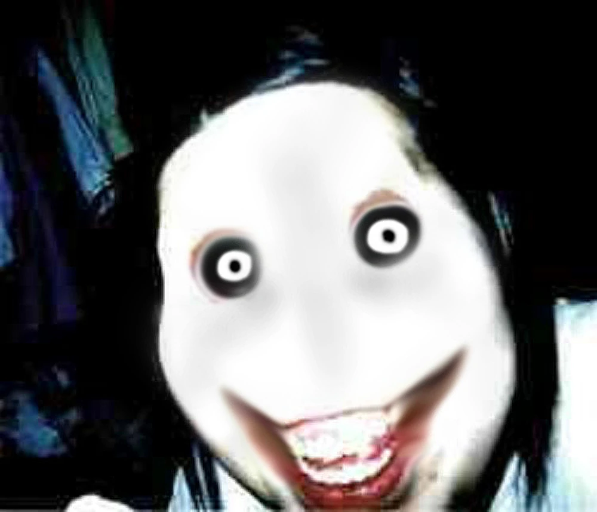

Jeff the Killer

Real Name: Jeffrey Woods
Age: 13 at the time of transformation
Location: Suburban USA
Era: 2000s (internet urban legend)
Jeff is a notorious creepypasta figure known for his disfigured face, pale skin, and chilling command: "Go to sleep." After a series of bullying incidents, he snapped, mutilated himself, and disappeared into the night. In Deathrun, Jeff appears as a jump-scare trap and sometimes chases players down tight corridors, often accompanied by distorted laughter and whispers.
Billy the Doll (Saw)
Real Name: N/A (puppet used by John Kramer)
Age: First appeared in 2004
Location: United States
Era: 2000s (Saw film series)
Billy is the mechanical puppet used by the Jigsaw killer, John Kramer, to communicate twisted moral lessons. He typically appears on a tricycle and speaks via pre-recorded tapes. In Deathrun, Billy appears in logic-based trap rooms, where runners must make deadly choices under pressure.
Freddy Fazbear
Real Name: Freddy Fazbear (animatronic)
Age: Debuted in 2014
Location: Freddy Fazbear's Pizza (fictional, USA)
Era: 1980s in-universe, created 2014
Freddy is the central animatronic of the Five Nights at Freddy's franchise. A haunted entertainer, he becomes deadly after midnight, stalking security guards. In Deathrun, Freddy emerges from dark corners to jump-scare players or trigger full-map lockdowns accompanied by eerie music box themes.
Freddy Krueger
Real Name: Frederick Charles Krueger
Age: Deceased at 30s, undead entity thereafter
Location: Springwood, Ohio (fictional)
Era: First appeared in 1984 (film)
Krueger is a supernatural killer who haunts dreams, slaying victims from within their subconscious. Formerly a child murderer, he was burned alive by vengeful parents, only to return as a dream-stalking demon. In Deathrun, Freddy’s traps include hallucinatory maze zones, dream portals, and fire-based instant kills.